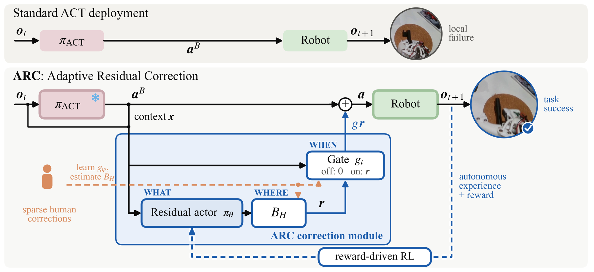
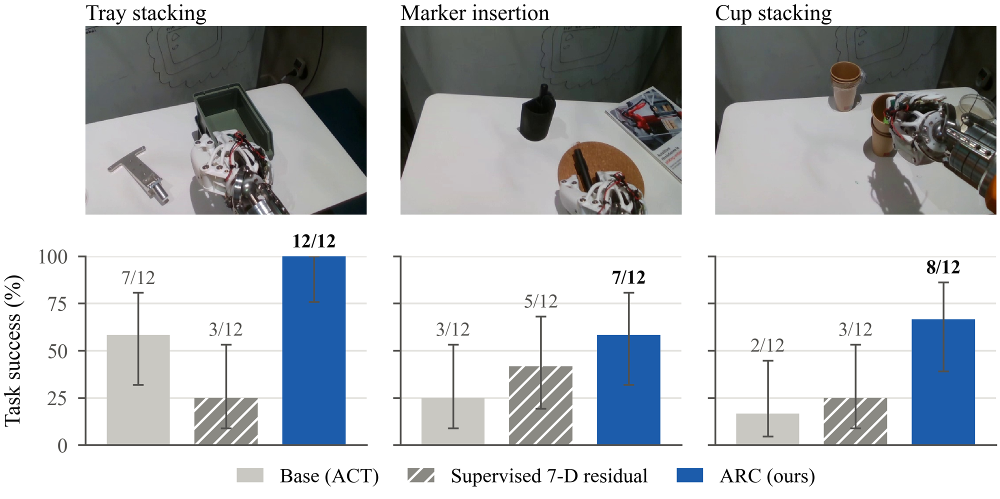
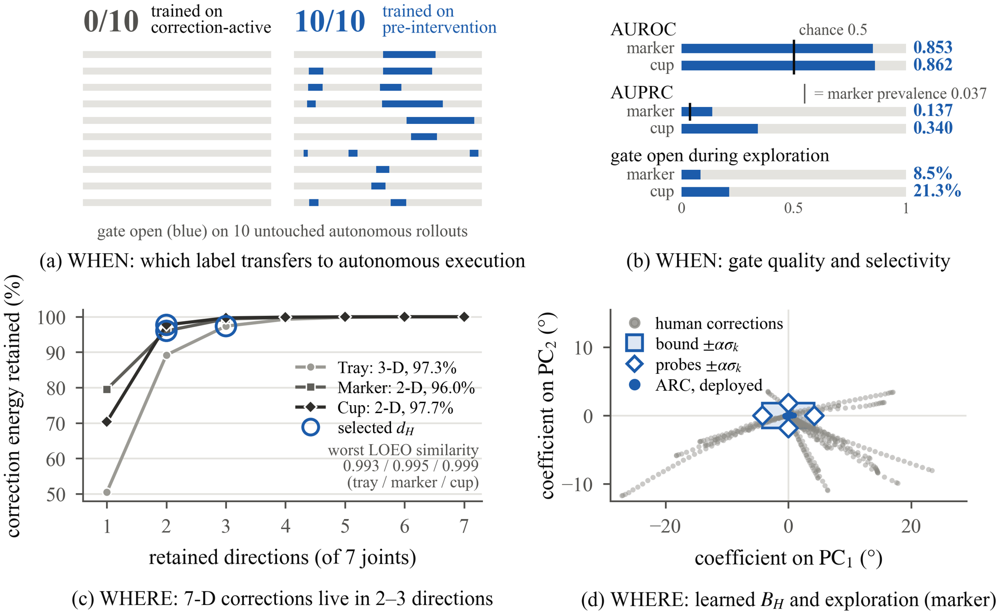
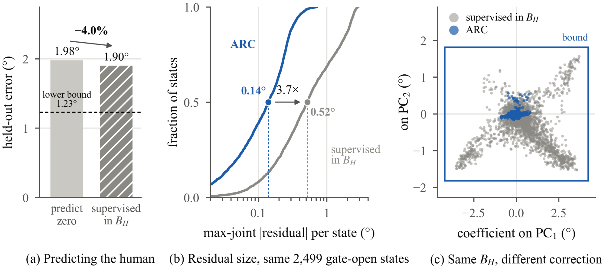

ARC · ADAPTIVE RESIDUAL CORRECTION
When, Where, and What to Correct: Human-Guided Adaptive Residual Correction for Robot Policies
Paper under double-blind review

Abstract
Imitation policies that reliably execute most of a manipulation trajectory can still fail in localized regions
requiring last-mile precision. Updating the full policy or exploring residual actions everywhere treats this
local failure as a global learning problem. We introduce Adaptive Residual Correction (ARC), a lightweight
post-training module that uses reinforcement learning (RL) to learn a residual correction on top of a frozen
policy while using sparse human corrections to structure autonomous exploration. Rather than treating human
corrections as imitation targets, ARC uses pre-intervention states to determine when residual control
should become active and correction geometry to determine where in residual action space autonomous
refinement should explore; task reward determines what residual is ultimately executed.
Experiments
Q1 · OVERALL PERFORMANCE
ARC improves real-robot task success on three precision tasks

Q2 · WHEN AND WHERE
Sparse corrections localize refinement in time and in action space

Q3 · WHAT
Same corrective subspace, different correction

Real-robot videos
Base policy (no correction)
Adaptive Residual Correction (ours)
Tray stackingsame table pose
Cup stacking
Inside ARC
Sparse human corrections. A person nudges the frozen policy with a SpaceMouse only at a few moments (orange). These short episodes define WHEN and WHERE corrections are needed.
The learned gate. The residual is exactly zero while the gate is closed and is added only once the gate opens (blue).